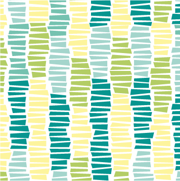

Inspired by classic children games, these packaging desings brings advanture to every table.
Packaging Concept
Red Bull is famous for its catchy slogan and sponsorship of extreme sports. When Yi, Nicole, Yumeng and I met at Red Bull Radical (a seventh-month long design competition) kick-off, it came to our attention that the beverage is most often consumed at workplace where opportunities to spike adrenalin are limited. After spending a few hours sitting behind the table getting to know each other, we wanted to move around and stretch. It reminded me of the school days and the Ring Toss game that I used to play during class breaks.
second colum
Quickly we cut out some rings out of packaging materials we had lying around, used a can as a poll and played the game just for laughs. Many people from other teams saw us laughing and asked if they could join us. Soon we had a line of people gathering around and laughing like kids. In a way, we conducted our first user testing before we even knew it. We took the hint and saw a great opportunity to translate Red Bull experiences to the office environment through incorporating classic games into Red Bull packaging. And it also prolongs the life of the package reusing it in fun ways!
Ring Toss
Inspired by popular outdoor game, this packaging design borrows the game mechanics of Ring Toss and transforms them directly into the package. Each side of the box has a perforated ring that could also be used as handles to carry the pack around. To play the game the rings could be easily torn off without compromising the integrity of the box keeping unopened cans together. One of the cans is then used as a pole. Although the game is simple, the users have the flexibility to add their own rules, making it even more fun and engaging.
Frogger
The idea for this design, came from a popular arcade game Frogger. (The hours I spent at Dave and Buster’s trying to get the frog on the other side of the pond!). Translating a video game into the package was a challenging and interesting experience. We used an old chinese technique of origami to transform parts of the packaging into the frog. It’s folded in the way that when pressed - it jumps. The top of the package has a perforated circle on it, which could also be used as a handle for the pack. When the circle is popped, it is used as a goal for the frog to jump in.
Air Hockey
Air Hockey is one of my absolute favorite table games, and so is this packaging design! The challenge here was to effectively use the limited space of the package and still apply the mechanics of the air hockey. The final solution was to turn the entire box into a playing field. The box has two lines cut out on the opposite ends of it that are used as gates. The puck is assembled out of a can tab and a small circle that can be popped out of the box. The players use their breath to move the pack and score the point. The game turned out to be highly competitive and fun! The player really have to measure the strength and be delicate enough not to blow away the puck, but yet powerful enough to defeat the opponent.
Game Mechanics
It's a play time now!
Ring toss has fairly simple instructions. Each player throws rings from a distance, aiming to get the rings over a can-post. Each ring that lands over a can scores points. The player with the most points wins. The simplicity of the game and its ability to be played it any environment made it an instant success.
Perfectly suited for a small gathering, Air Hockey is a true ice breaker. Once the package is unfolded and the pack is made, two players take positions by the "gates" on the opposite ends of battle field. Players try to score a point by blowing air and moving the pack into the opponent's gate. To game stops then a player scores 7 points or runs out of breath.
The mechanics for Froggers are similar to famous basketball game of "33", also known as "21". After the frog is folded and a launch distance is establish, first player take a turn trying to push the frog into the "pond" - a small opening on top of the package. Second player proceeds with his turn from the place where the frog landed. A player get a score if the frog lands into the pond. The game continues until a player score 10 points. This game could be played for hours as the rules can be easily alternated adding a competitive element or difficulty levels.
Graphics
Each package was designed to reflect the game incorporated in it, borrowing traditional elements of the extreme sports or the environment.
The package for Ring Toss was inspired by exprime moto sports. It was only natural that the tossing rings were designed to be wheels. Each wheel has a different width to intensify the difficulty to score a point. The pattern itself was inspired by tire prints that could usually be seen on sand or dirt.

Frogger was really interesting to work on! Although the game is well known and familiar to most, it doesn't have a precedent in extreme sports or outdoor activities (unless, you are like me and loved catching tod polls as a kid!). So I turned to the natural environment and drew my inspiration for the pattern from the grass. For this package, I drew my inspiration from the grass.
For Air Hockey package I wanted to work with the existing attributes of the sport. Hockey sticks and pucks provided a rich foundation to play with while brainstorming ideas for the final design. At the end, I settled on a clean and simple pattern of crossed sticks with a puck as a bright accent in between.